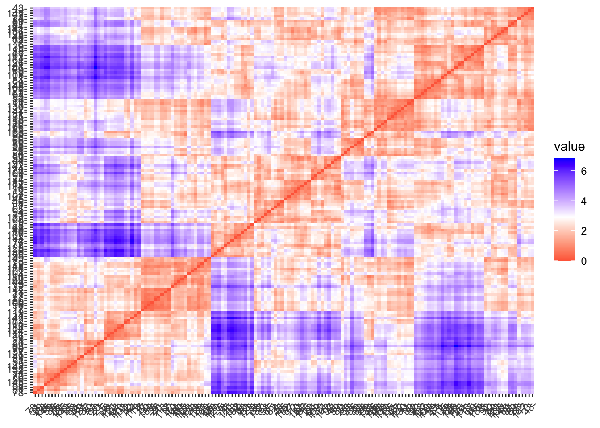

Welcome! Want to learn more? See two factoextra-related books at https://goo.gl/ve3WBa
library(hopkins)library(NbClust)
Cargar Data
Datos iris de plantas:
Este famoso conjunto de datos de iris (de Fisher o de Anderson) da las medidas en centimetros de las variables longitud y ancho de los sepalos y longitud y ancho de los petalos, respectivamente, para 50 flores de cada una de las 3 especies de iris. Las especies son Iris setosa, versicolor y virginica.
data("iris")# sacar informacion que no es necesariadf <- iris[, -5]
Generar datos aleatorios
Generamos un dataset de mentira, usando valores aleatorios en los rangos de valores de cada columna vamos a usarlo para comparar la posibilidad de hacer clustering con datos aleatorios y agregados
random_df <-apply(df, 2, # el argumento MARGIN = 2 quiere decir que se realizara la funcion sobre las columnasfunction(x){runif(length(x), min(x), (max(x)))}) # runif para crear x numero de observacionesrandom_df <-as.data.frame(random_df)
14.1.1 PCA
# hacer PCA, usar escalado p normalizacion de los datospca =prcomp(df, scale = T)pca_random =prcomp(random_df, scale = T)
# Plot the random dffviz_pca_ind(pca_random, title ="PCA - Random data",habillage = iris$Species, palette ="jco",geom ="point", ggtheme =theme_classic())
### fviz_pca_var ------------------------------------------------------------# La funcion fviz_pca_var grafica los vectores de las variablesfviz_pca_var(pca,geom ="arrow", # "text"col.var ="red",alpha.var ="contrib" ) +theme_minimal()
### get_clust_tendency ------------------------------------------------------# Esta funcion es iterativa, como nombramos en la case, por lo que valores > 0.5 # se concluyen que son clusterizables# data irisres <-get_clust_tendency(pca$x[, 1:2], n =nrow(df) -1, graph =FALSE)res$hopkins_stat
[1] 0.7766724
# data randomres <-get_clust_tendency(random_df, n =nrow(random_df)-1, graph =FALSE)res$hopkins_stat
[1] 0.50328
Opciópn 2:
### clustertend -------------------------------------------------------------# Con esta funcion es mas dicicil de interpretar, se basa en un test mas clasico estadistico# H0 = aleatorio# H1 = clusterizado# pero van a ver que el valor de P no es tan directo como P < 0.05hopkins(df)
[1] 0.9980229
hopkins(random_df)
[1] 0.5850471
## Interpretacion visual --------------------------------------------------# estimar matrices de disimilaridad usando distancia euclidiana# la funcion dist() sirve bien en este caso, para mas opciones usar vegdist (vegan)# datos Irisdm <-dist(df)fviz_dist(dm)
# datos randomdm <-dist(random_df)fviz_dist(dm)

14.1.3 Selección de K
## Seleccion numero cluster para k-means ----------------------------### Metodo del codo --------------------------------------------------------# variacion inter-cluster (wss) (mas bajo mejor)fviz_nbclust(x =scale(df), FUNcluster = kmeans, method ="wss", k.max =15) +labs(title ="Número óptimo de clusters")
### Metodo de silueta -------------------------------------------------------# silhouette (numero mas alto mejor)fviz_nbclust(x =scale(df), FUNcluster = kmeans, method ="silhouette", k.max =15) +labs(title ="Número óptimo de clusters")
### Gap statistic -----------------------------------------------------------# Gap statistic (numero mas alto mejor)fviz_nbclust(x =scale(df), FUNcluster = kmeans,method ="gap_stat", k.max =15) +labs(title ="Número óptimo de clusters")
## Estimar por varios metodos simultaneamente ----------------------------clusters1 <-NbClust(data =scale(df), distance ="euclidean", min.nc =2,max.nc =10, method ="kmeans", index ="alllong")
*** : The Hubert index is a graphical method of determining the number of clusters.
In the plot of Hubert index, we seek a significant knee that corresponds to a
significant increase of the value of the measure i.e the significant peak in Hubert
index second differences plot.
*** : The D index is a graphical method of determining the number of clusters.
In the plot of D index, we seek a significant knee (the significant peak in Dindex
second differences plot) that corresponds to a significant increase of the value of
the measure.
*******************************************************************
* Among all indices:
* 13 proposed 2 as the best number of clusters
* 10 proposed 3 as the best number of clusters
* 1 proposed 4 as the best number of clusters
* 1 proposed 6 as the best number of clusters
* 3 proposed 10 as the best number of clusters
***** Conclusion *****
* According to the majority rule, the best number of clusters is 2
*******************************************************************
fviz_nbclust(clusters1)
Warning in if (class(best_nc) == "numeric") print(best_nc) else if
(class(best_nc) == : the condition has length > 1 and only the first element
will be used
Warning in if (class(best_nc) == "matrix") .viz_NbClust(x, print.summary, : the
condition has length > 1 and only the first element will be used
Warning in if (class(best_nc) == "numeric") print(best_nc) else if
(class(best_nc) == : the condition has length > 1 and only the first element
will be used
Warning in if (class(best_nc) == "matrix") {: the condition has length > 1 and
only the first element will be used
Among all indices:
===================
* 2 proposed 0 as the best number of clusters
* 13 proposed 2 as the best number of clusters
* 10 proposed 3 as the best number of clusters
* 1 proposed 4 as the best number of clusters
* 1 proposed 6 as the best number of clusters
* 3 proposed 10 as the best number of clusters
Conclusion
=========================
* According to the majority rule, the best number of clusters is 2 .
### Resultados --------------------------------------------------------------# que observaciones corresponden a cada clase? which(clusters1$Best.partition ==1)
# grafico con colores por clasesfviz_pca_ind(pca, title ="PCA - Iris data", habillage = clusters1$Best.partition, palette ="jco",geom ="point", ggtheme =theme_classic(),legend ="bottom")
14.1.5 Datos 2
# Datos de espectoscopia de campo -----------------------------------------# cargar foliares de pigmentos (clorofila, carotenoides, contenido de agua, ...) # con datos hiperespectrales tomados por espectroscopia de campo # (datos de reflectancia de teledetección = 2051 variables)# datos de rasgos de hojas + reflectanciadata1 <-read.csv('https://raw.githubusercontent.com/JavierLopatin/Clases/master/M%C3%A9todos_avanzados_en_R/dataset/angers-leaf-optical-properties-database--2003.csv')
# Filtrar datos -----------------------------------------------------------# solamente utilizar los datos de reflectancia, los de transmitancia no los utilizaremos.data1 <- data1[data1$Measurement_type =='reflectance', ]
# obtener los los rasgos y cambiar el nombre de las columnastraits <- data1[, c(2, 4, 7, 9, 15)]colnames(traits) <-c('Car', 'Cab', 'Cw', 'Cm', 'N')head(traits)
# obtener la reflectanciareflec <- data1[, 22:ncol(data1)]# head(reflec)
14.2 PCA
pca <-prcomp(reflec, scale =TRUE)names(pca)
[1] "sdev" "rotation" "center" "scale" "x"
## Cluster -----------------------------------------------------------------# numero ideal de clustersset.seed(123)clusters2 <-NbClust(data = pca$x[,1:2], distance ="euclidean", min.nc =2,max.nc =10, method ="kmeans", index ="alllong")fviz_nbclust(clusters2)clusters2$Best.partition
Warning in if (class(best_nc) == "numeric") print(best_nc) else if
(class(best_nc) == : the condition has length > 1 and only the first element
will be used
Warning in if (class(best_nc) == "matrix") .viz_NbClust(x, print.summary, : the
condition has length > 1 and only the first element will be used
Warning in if (class(best_nc) == "numeric") print(best_nc) else if
(class(best_nc) == : the condition has length > 1 and only the first element
will be used
Warning in if (class(best_nc) == "matrix") {: the condition has length > 1 and
only the first element will be used
Among all indices:
===================
* 2 proposed 0 as the best number of clusters
* 1 proposed 1 as the best number of clusters
* 6 proposed 2 as the best number of clusters
* 5 proposed 3 as the best number of clusters
* 4 proposed 4 as the best number of clusters
* 2 proposed 5 as the best number of clusters
* 1 proposed 6 as the best number of clusters
* 1 proposed 7 as the best number of clusters
* 4 proposed 8 as the best number of clusters
* 1 proposed 9 as the best number of clusters
* 3 proposed 10 as the best number of clusters
Conclusion
=========================
* According to the majority rule, the best number of clusters is 2 .
### Plot --------------------------------------------------------------------env <-envfit(pca, traits) # La funcion ajusta vectores o factores ambientales en una ordenacion.plot(pca$x[,c(1,2)], col = clusters2$Best.partition, pch =16)# dev.off()plot(env)
14.3 Turberas
# Turbera con NMDS --------------------------------------------------------## Cargar datos ------------------------------------------------------------cob_data =read.csv('https://raw.githubusercontent.com/JavierLopatin/Clases/master/M%C3%A9todos_avanzados_en_R/dataset/Cover_spp_peatland.csv')veg_data =read.csv('https://raw.githubusercontent.com/JavierLopatin/Clases/master/M%C3%A9todos_avanzados_en_R/dataset/Peatland.csv')# datos de presencia/cobertura (0-100) de especiescob_data[1:8, 1:5]
# NMDS --------------------------------------------------------------------# Seleccionar el número de componentes (k) de acuerdo al stressnmds.stress <-sapply(1:6, function(x) metaMDS(cob_data[,2:ncol(cob_data)], distance='bray', k = x)$stress)
Square root transformation
Wisconsin double standardization
Run 0 stress 0.3857319
Run 1 stress 0.5426863
Run 2 stress 0.5601819
Run 3 stress 0.5604783
Run 4 stress 0.5542214
Run 5 stress 0.5414761
Run 6 stress 0.527185
Run 7 stress 0.5327152
Run 8 stress 0.5047657
Run 9 stress 0.3890268
Run 10 stress 0.5606399
Run 11 stress 0.4450788
Run 12 stress 0.4793383
Run 13 stress 0.5587264
Run 14 stress 0.5083215
Run 15 stress 0.4614011
Run 16 stress 0.4763974
Run 17 stress 0.5520983
Run 18 stress 0.456409
Run 19 stress 0.5254892
Run 20 stress 0.4372759
*** Best solution was not repeated -- monoMDS stopping criteria:
1: stress ratio > sratmax
19: scale factor of the gradient < sfgrmin
Square root transformation
Wisconsin double standardization
Run 0 stress 0.1923727
Run 1 stress 0.1923726
... New best solution
... Procrustes: rmse 8.541045e-05 max resid 0.000400036
... Similar to previous best
Run 2 stress 0.1923727
... Procrustes: rmse 0.0001222113 max resid 0.0006005915
... Similar to previous best
Run 3 stress 0.1923726
... Procrustes: rmse 7.050848e-06 max resid 2.465748e-05
... Similar to previous best
Run 4 stress 0.2561639
Run 5 stress 0.1923727
... Procrustes: rmse 0.0001082055 max resid 0.0005322097
... Similar to previous best
Run 6 stress 0.2031201
Run 7 stress 0.3936754
Run 8 stress 0.1923726
... Procrustes: rmse 1.087396e-05 max resid 5.329712e-05
... Similar to previous best
Run 9 stress 0.2518956
Run 10 stress 0.1923726
... Procrustes: rmse 1.493948e-06 max resid 7.117867e-06
... Similar to previous best
Run 11 stress 0.2564063
Run 12 stress 0.1923727
... Procrustes: rmse 7.224348e-05 max resid 0.000355573
... Similar to previous best
Run 13 stress 0.2333127
Run 14 stress 0.2031201
Run 15 stress 0.2800944
Run 16 stress 0.1923726
... Procrustes: rmse 1.966379e-06 max resid 8.060699e-06
... Similar to previous best
Run 17 stress 0.1923726
... New best solution
... Procrustes: rmse 7.575362e-06 max resid 3.662978e-05
... Similar to previous best
Run 18 stress 0.2139629
Run 19 stress 0.2038645
Run 20 stress 0.1923726
... Procrustes: rmse 1.201172e-05 max resid 5.872963e-05
... Similar to previous best
*** Best solution repeated 2 times
Square root transformation
Wisconsin double standardization
Run 0 stress 0.1235178
Run 1 stress 0.1235178
... New best solution
... Procrustes: rmse 6.382757e-05 max resid 0.0001885531
... Similar to previous best
Run 2 stress 0.1393996
Run 3 stress 0.1264616
Run 4 stress 0.1263587
Run 5 stress 0.1235179
... Procrustes: rmse 4.978539e-05 max resid 0.0001602043
... Similar to previous best
Run 6 stress 0.1243044
Run 7 stress 0.1235179
... Procrustes: rmse 0.0001227537 max resid 0.0004786504
... Similar to previous best
Run 8 stress 0.1235179
... Procrustes: rmse 0.0001453185 max resid 0.0005514929
... Similar to previous best
Run 9 stress 0.1235178
... Procrustes: rmse 3.386403e-05 max resid 9.864189e-05
... Similar to previous best
Run 10 stress 0.1235178
... Procrustes: rmse 5.244228e-05 max resid 0.00017385
... Similar to previous best
Run 11 stress 0.1264609
Run 12 stress 0.1235178
... Procrustes: rmse 4.984972e-05 max resid 0.0001577974
... Similar to previous best
Run 13 stress 0.1235179
... Procrustes: rmse 7.983455e-05 max resid 0.0002743034
... Similar to previous best
Run 14 stress 0.1235179
... Procrustes: rmse 0.0001461075 max resid 0.0005522178
... Similar to previous best
Run 15 stress 0.1235178
... Procrustes: rmse 5.893151e-05 max resid 0.0001985999
... Similar to previous best
Run 16 stress 0.126461
Run 17 stress 0.1264609
Run 18 stress 0.1263583
Run 19 stress 0.1267449
Run 20 stress 0.1235178
... New best solution
... Procrustes: rmse 9.850897e-06 max resid 2.279755e-05
... Similar to previous best
*** Best solution repeated 1 times
Square root transformation
Wisconsin double standardization
Run 0 stress 0.09289043
Run 1 stress 0.0928907
... Procrustes: rmse 0.0004625496 max resid 0.001576994
... Similar to previous best
Run 2 stress 0.0928907
... Procrustes: rmse 0.0004495649 max resid 0.001527415
... Similar to previous best
Run 3 stress 0.09289389
... Procrustes: rmse 0.001172071 max resid 0.004064954
... Similar to previous best
Run 4 stress 0.09897122
Run 5 stress 0.09289124
... Procrustes: rmse 0.0006922692 max resid 0.002445032
... Similar to previous best
Run 6 stress 0.09289117
... Procrustes: rmse 0.0006596876 max resid 0.002444468
... Similar to previous best
Run 7 stress 0.09289126
... Procrustes: rmse 0.0007180485 max resid 0.002642458
... Similar to previous best
Run 8 stress 0.09289059
... Procrustes: rmse 0.0004052224 max resid 0.001440503
... Similar to previous best
Run 9 stress 0.09289125
... Procrustes: rmse 0.0006262657 max resid 0.002195934
... Similar to previous best
Run 10 stress 0.0928906
... Procrustes: rmse 0.0002335095 max resid 0.0008958358
... Similar to previous best
Run 11 stress 0.09482517
Run 12 stress 0.09370445
Run 13 stress 0.09279393
... New best solution
... Procrustes: rmse 0.02579753 max resid 0.1069719
Run 14 stress 0.09289055
... Procrustes: rmse 0.02573238 max resid 0.1066406
Run 15 stress 0.09279385
... New best solution
... Procrustes: rmse 0.0004611966 max resid 0.001388567
... Similar to previous best
Run 16 stress 0.09289053
... Procrustes: rmse 0.02593918 max resid 0.1076334
Run 17 stress 0.09289051
... Procrustes: rmse 0.02606942 max resid 0.1084585
Run 18 stress 0.09279407
... Procrustes: rmse 0.0001115516 max resid 0.0003075789
... Similar to previous best
Run 19 stress 0.09289063
... Procrustes: rmse 0.02584293 max resid 0.1073264
Run 20 stress 0.09289051
... Procrustes: rmse 0.02584909 max resid 0.1074566
*** Best solution repeated 2 times
Square root transformation
Wisconsin double standardization
Run 0 stress 0.07593068
Run 1 stress 0.07593456
... Procrustes: rmse 0.002897248 max resid 0.008073687
... Similar to previous best
Run 2 stress 0.07526411
... New best solution
... Procrustes: rmse 0.05121967 max resid 0.1656961
Run 3 stress 0.07526441
... Procrustes: rmse 0.001311145 max resid 0.004363915
... Similar to previous best
Run 4 stress 0.07578304
Run 5 stress 0.07584263
Run 6 stress 0.07635292
Run 7 stress 0.07526442
... Procrustes: rmse 0.0009042487 max resid 0.002258812
... Similar to previous best
Run 8 stress 0.07620666
Run 9 stress 0.07526439
... Procrustes: rmse 0.001655325 max resid 0.006437287
... Similar to previous best
Run 10 stress 0.07616248
Run 11 stress 0.07579168
Run 12 stress 0.07619842
Run 13 stress 0.07614624
Run 14 stress 0.07583621
Run 15 stress 0.07564013
... Procrustes: rmse 0.0263841 max resid 0.1271941
Run 16 stress 0.07598125
Run 17 stress 0.07736624
Run 18 stress 0.07597923
Run 19 stress 0.07706052
Run 20 stress 0.07526406
... New best solution
... Procrustes: rmse 0.001277672 max resid 0.004385501
... Similar to previous best
*** Best solution repeated 1 times
Square root transformation
Wisconsin double standardization
Run 0 stress 0.06186845
Run 1 stress 0.06379612
Run 2 stress 0.06237454
Run 3 stress 0.06263849
Run 4 stress 0.06251037
Run 5 stress 0.06243933
Run 6 stress 0.06197935
... Procrustes: rmse 0.01017859 max resid 0.02968044
Run 7 stress 0.06313993
Run 8 stress 0.06356649
Run 9 stress 0.06197038
... Procrustes: rmse 0.00962411 max resid 0.02805013
Run 10 stress 0.1763408
Run 11 stress 0.06223962
... Procrustes: rmse 0.01748858 max resid 0.06610401
Run 12 stress 0.06234147
... Procrustes: rmse 0.02147161 max resid 0.08600148
Run 13 stress 0.06329911
Run 14 stress 0.06350443
Run 15 stress 0.06337565
Run 16 stress 0.06187247
... Procrustes: rmse 0.003994152 max resid 0.01117107
Run 17 stress 0.06188965
... Procrustes: rmse 0.003567426 max resid 0.01113659
Run 18 stress 0.06333107
Run 19 stress 0.06246038
Run 20 stress 0.06309002
*** Best solution was not repeated -- monoMDS stopping criteria:
19: no. of iterations >= maxit
1: stress ratio > sratmax
plot(1:6, nmds.stress, xlab ="Número de componentes", ylab ='Stress')abline(h =0.15, lty =2, col ="red")